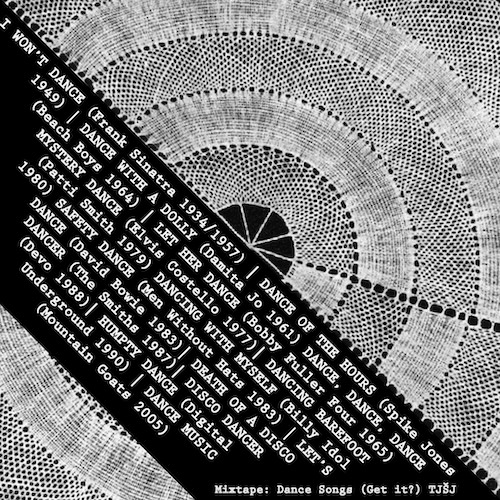

2024-06 |
A month of fluctuating probabilities, and more sun. The European Parliament elections
went badly, in Czechia anyway. We had a political party called "Motorists supporting motorists"
whose candidate was pretty openly a neonazi (albeit a ~quirky~ one), and he won, because
someone wanted to own the libs.
♮ Facebook informed me that 11 years ago, quasi-employed in Brno, I made this mixtape, called 'Dance Songs', of songs
with the word dance in them (In the words of younger self: "[1934-2005, arranged chronologically and also arguably in order
of increasing weirdness]") It kinda holds up, in that it's still on
Google Drive
and I still like most of these songs.
(I vaguely remember it at the time being spurred by wanting to listen to
this song over and over whilst riding my bike
through south Moravia - things do not have to be complicated to be nice.)

♮ Speaking of uncomplicated nice things: a sunlit, gentle Berlin cover of one of the
classics. Things do not have to be complicated to
be excellent (though often they are). (This other classic,
which samples it, is both for me
a time capsule to the odd and optimistic experience of being a
nineties kid immigrant to the Atlantic seabord & just generally a portable ray of sunshine for all weathers.)
♮ A new Charli xcx track--
uf! (h/t C.P., and many others)